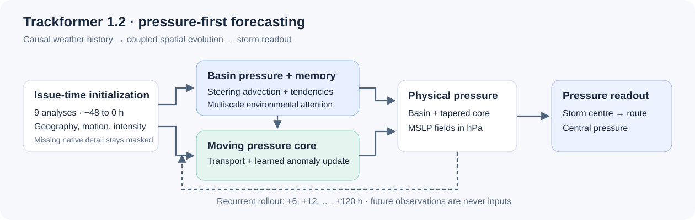

Overview
- Causal by construction — the inputs end at the issue time: no JMA or JTWC forecast route, no future analysis, no observation from after the issue. Later data is used only to score a forecast, never to make one — which is what makes a hindcast on a 1979 storm mean something
- An ensemble mean, and an honest band — benchmark and live runs average 50 seeded perturbations of the past and issue-time inputs, not 50 separately trained networks; the historical backfill is one member per issue. The Lab publishes the mean rather than the members, so the shaded band on the explorer is 1.2's published mean track error at each lead — how far off it typically is — not a spread invented for the run on screen
- Intensity is the honest weak spot — central-pressure error against JMA is 12.84 hPa for 1.2 and 13.53 hPa for 1.1 on the 134 starts where both can be scored, but the paired 95% interval of [−2.68, +1.20] hPa includes zero, so no intensity gain is claimed. The maximum-wind number is an auxiliary output whose averaging period is not validated and whose USA-wind benchmark is worse than 1.1's, and 1.2 has no wind-radius head at all — so the explorer draws no radius rings for it
- 32,230 forecasts you can look up — six-hourly starts for every western-Pacific storm from 1996 on, plus first issues back to 1970, each saved with its inputs' hashes and served read-only by the Trackformer Weather Lab, alongside a live run every six hours for whatever JMA is tracking
- Live & honest — it overlays its forecast on the JMA official track for active storms and lets you scrub any past storm to forecast forward against what actually happened. Where 1.2 has no run the overlay falls back to Trackformer 1.1 and says so; where neither has one it draws nothing, rather than quietly substituting another model. Clearly flagged experimental — research output, not an operational warning system
How it runs on this site
- 1.2: typhoon-predict runs it on GitHub-hosted CPUs — the historical backfill and a live job every six hours — and the Trackformer Weather Lab serves every saved forecast through a public, read-only, CORS-enabled API
- The explorer calls that API from your browser: a storm's issue list (~5 KB), then each forecast (~25 KB) as you scrub. Nothing is mirrored here, so a new run appears as soon as the Lab publishes it
- Every forecast is checked against the released checkpoint before it is drawn, so no other model can appear under the 1.2 name
- 1.1: a GitHub Actions job on this site still computes its live run, as the fallback
- No API keys or accounts; the only thing sent to the Lab is which storm's forecasts to fetch
Example forecasts
Mangkhut (2018), issued 11 Sep 00 UTC — the release's featured film: basin pressure and the moving core registered on one map, 20 steps in 20 seconds. Mangkhut falls in 1.2's training years.
| Forecast (50-member mean) | Mean track error | At +120 h | Pressure MAE | Leaves regional patch |
|---|---|---|---|---|
| Mangkhut, 11 Sep 2018 00Z | 77.5 km | 191.7 km | 7.39 hPa | stays inside |
| Soudelor, 5 Aug 2015 00Z | 120.6 km | 354.4 km | 9.86 hPa | +90 h |
| Fung-wong, 7 Nov 2025 00Z | 130.9 km | 142.3 km | 7.36 hPa | +66 h |
| Meranti, 10 Sep 2016 00Z | 192.9 km | 453.3 km | 13.90 hPa | +84 h |
From each film's provenance record; all 20 leads scored. Fung-wong stays within 200 km of the real track at every lead. Mangkhut, Soudelor and Meranti fall in 1.2's training years, and all four are hand-picked — set them against the 471 km benchmark mean, not in place of it.
Each film is a 50-member mean against the observed best track. They are selected development illustrations, not typical skill or untouched-test evidence — the benchmark above is the measure. Streamed from the release's example archive on Hugging Face.
At a glance
- Model
- Trackformer 1.2 — coupled pressure-field tropical-cyclone forecaster
- Released
- 29 Sep 2026 as
trackformer-1.2; paper revised 1 Oct 2026 - Author
- Yu Yao-Hsing
- Status
- Research model, not operational
- Type
- Recurrent convolutional encoder–decoders with Transformer attention, rolled out autoregressively
- Parameters
- 21,452,595 — one shared set of weights
- Domain
- Western North Pacific: basin grid 0–60°N, 100–180°E at 2.5°; regional grid ±15° around the storm at 0.25°
- Inputs
- Nine six-hourly analyses (−48 to 0 h) of sea-level pressure, 500 hPa height and the winds at 850/500/200 hPa; static geography; the observed centre, motion and issue-time intensity
- Outputs
- Track, central pressure, basin and regional sea-level pressure fields, and an auxiliary maximum wind at +6, +12, …, +120 h
- Ensemble
- Benchmark, showcase and live-ensemble runs average 50 seeded perturbations of the inputs; the historical archive and
predict.pygive single clean forecasts - Training data
- Whole storms by year: 2000–2021 training, 2022–23 validation, 2024–25 test; labels from IBTrACS
- Licence
- MIT
- Weights
weights.pt, 86.0 MB (85,997,315 bytes); the released checkpoint is from epoch 4- Weights SHA-256
db49f36e85a3766defc4c172746897a1f783705d1ce8e6f9dfb8e87ae1d902cb- Checkpoint SHA-256
f194a23d3f91ea76ad776dfad942fabd669eeae8b3fd665815463095367e9ee0— the hash every saved forecast carries, and the one the Typhoon Tracks overlay checks- Dataset SHA-256
04fd0d30620137aad20173dcd59e22da2a6c20fae2f17de593e91a59517459c1(manifest)- Paper
- Trackformer 1.2: Coupled pressure-field forecasting (PDF, 10 pages)
How it works

- Initialise from the past. Nine six-hourly analyses, −48 h to the issue time, of sea-level pressure, 500 hPa height and the winds at 850, 500 and 200 hPa, with static geography, the storm's observed centre, recent motion, current intensity and validity masks. Finer regional pressure detail is used where it exists; where it does not, it stays masked rather than filled in.
- Evolve the environment. A convolutional recurrent network advances the basin's pressure by steering-based advection plus learned pressure tendencies, with multiscale spatial tokens and attention conditioning its memory.
- Move and evolve the core. A storm-centred pressure anomaly is carried relative to that environment and updated by its own learned tendencies; basin pressure plus the tapered core anomaly is the spatial forecast.
- Read out the storm. The centre is the local low within 300 km and the central pressure is sampled there, so the route and the pressure forecast cannot disagree. A separate auxiliary head gives a single maximum-wind number — not a wind map.
- Roll forward. Twenty autoregressive six-hour steps give +6, +12, …, +120 h. Future truth is a training target, never an inference input.
| Released architecture | Configuration |
|---|---|
| Trainable parameters | 21,452,595 |
| Basin history | 9 × 8 × 25 × 33 (steps × channels × lat × lon), −48 to 0 h |
| Basin / core network widths | 72 / 144 / 288 / 432 and 64 / 128 / 256 / 384 |
| Moving core | 65 × 65, about 20 km spacing |
| Environmental attention | 134 pooled tokens, width 64, 4 heads, 2 Transformer blocks |
| Recurrent memory | 32 channels each, basin and core |
| Forecast steps | 20 × 6 h |
Under the hood, from the paper
- Two encoder–decoders. The basin network runs at widths 72/144/288/432 with depths 2/2/4/4 on the 25 × 33 grid; the core network runs at 64/128/256/384 on a 65 × 65 frame at 20 km spacing, ±640 km around the storm. Each keeps a 32-channel convolutional GRU memory between steps.
- Attention for context. The basin is pooled into 134 multiscale tokens (width 64, 4 heads, 2 pre-norm Transformer layers), and all 825 basin cells cross-attend to them, so a ridge or trough far from the storm can condition its motion.
- Steering transport. The steering flow is a learned blend of the 850, 500 and 200 hPa winds, starting at weights 0.4/0.4/0.2, plus a bounded learned correction. It advects the basin pressure, and the next step's motion proposal is 70% of that steering displacement (wind in m/s × 21.6 gives km per six hours) plus 30% of the previous step's motion, plus a learned correction bounded at ±100 km.
- Pressure-associated readout. The new centre is a soft minimum of pressure within 300 km of the proposal, weighted by a 180 km Gaussian; central pressure is sampled at that centre, not taken as the grid minimum.
- Geographic reconstruction. The map is the basin field plus the tapered core anomaly, registered by position. Once a storm leaves the ±15° regional patch — at +66 to +90 h in the films below — only the 2.5° basin field covers it.
Inputs and outputs
The model reads one causal issue packet and writes one forecast, both NumPy .npz files (pickled content is refused). Every input ends at the issue time. The eight channels are sea-level pressure (hPa), 500 hPa height (m) and the u/v winds at 850, 500 and 200 hPa (m/s), each normalised by a mean and standard deviation fitted on the training split alone — sea-level pressure, for example, by 8.27 hPa. The full contract is in the model README.
Input packet
global_history9×8×25×33 — the basin analysesregional_history9×1×121×121 — storm-centred pressure detailglobal_static,regional_static— latitude, longitude, land fraction, elevationdetail_available— whether that regional detail existscenter,motion(km) — observed position and last six-hour motionissue_intensity(kt, hPa),issue_mask— current intensity and which parts are knownissue_time_ns,history_time_ns— nine consecutive six-hour times ending at the issue
Forecast
lead_hours— 6 to 120 in six-hour stepstrack_lat_lon— the storm centre at each leadcentral_pressure_hpa— sampled at that centre, not the grid minimumbasin_mslp_hpa,regional_mslp_hpa— the pressure mapsmaximum_wind_auxiliary_kt— a scalar with validity mask, averaging period not validated- Experimental pressure-derived wind, RMW and R34/R50/R64 estimates — diagnostics, not forecasts (method)
Training
- Split by whole storm and year, so no storm is in two splits: 13,949 training windows from 2000–2021, 1,041 validation windows from 2022–23 and 1,195 test windows from 2024–25; 800, 100 and 100 of them carry native regional pressure detail. No separate scores on the test split are published — the evaluation below is the released benchmark.
- Normalisation is a per-channel mean and standard deviation fitted on the training split only (through 2021).
- Objective: a weighted sum of the basin-field and regional-field errors, the route (weight 0.2), central pressure (0.5), auxiliary wind (0.05), and the six-hour changes in pressure (0.25) and position (0.1). The innermost 150 km is left out of regional-field supervision. Future observations are targets only.
- Ensemble: 50 members from seeded, smoothed perturbations of the past and issue-time inputs — not 50 separately trained networks — averaged with equal weight. Noise is 0.025 standard deviations on the basin fields and 0.015 on the regional field, smoothed over 5 and 9 cells, with each member's seed fixed so every forecast can be replayed exactly. The spread is not calibrated uncertainty.
- Labels: IBTrACS positions and central pressure, from both the JMA (
TOKYO_PRES) and USA (USA_PRES) fields.
Evaluation
The released daily benchmark scores 1.2 against Trackformer 1.1 on 1,473 daily forecasts of 270 western-Pacific storms — 230 from 1980–1999 and 40 from 2024 on — with the same starts, valid times and leads for both. Each lead's error is averaged per day and each storm is weighted equally. 1.2 is the mean of 50 members. The cohort lies outside 1.2's fitting and validation years, but it is a development comparison, not a certified untouched holdout.
| Daily benchmark (270 storms) | 1.1 | 1.2 |
|---|---|---|
| Mean track error, +6 to +120 h | 798.4 km | 471.2 km |
| Track error at +24 / +72 / +120 h | 273 / 887 / 1,646 km | 165 / 503 / 1,032 km |
| Six-hour heading error | 51.58° | 34.96° |
| Fréchet distance to the observed track | 1,658.1 km | 1,045.8 km |
| Track shape similarity (1 = identical) | 0.754 | 0.884 |
| Path similarity (1 = identical) | 0.534 | 0.656 |
Track error at all 20 leads
| Lead | 1.1 (km) | 1.2 (km) | change |
|---|---|---|---|
| +6 h | 66.1 | 48.3 | −27% |
| +12 h | 133.5 | 91.1 | −32% |
| +18 h | 202.4 | 129.1 | −36% |
| +24 h | 273.3 | 164.5 | −40% |
| +30 h | 346.9 | 199.1 | −43% |
| +36 h | 419.9 | 234.9 | −44% |
| +42 h | 493.6 | 272.5 | −45% |
| +48 h | 568.1 | 311.5 | −45% |
| +54 h | 644.1 | 353.5 | −45% |
| +60 h | 722.6 | 399.4 | −45% |
| +66 h | 803.6 | 449.3 | −44% |
| +72 h | 886.6 | 502.5 | −43% |
| +78 h | 973.3 | 558.3 | −43% |
| +84 h | 1,060.6 | 616.2 | −42% |
| +90 h | 1,151.6 | 677.7 | −41% |
| +96 h | 1,245.0 | 740.9 | −40% |
| +102 h | 1,343.6 | 808.8 | −40% |
| +108 h | 1,443.2 | 880.1 | −39% |
| +114 h | 1,544.1 | 954.9 | −38% |
| +120 h | 1,646.4 | 1,031.6 | −37% |
| Intensity (134 starts, 40 storms) | 1.1 | 1.2 |
|---|---|---|
| Central pressure MAE vs JMA | 13.53 hPa | 12.84 hPa* |
| Pressure-curve similarity vs JMA | 0.7074 | 0.7118 |
| Central pressure MAE vs USA | 12.84 hPa | 12.55 hPa* |
| Central pressure MAE vs JMA at +120 h | 15.95 hPa | 12.44 hPa |
| Central pressure MAE vs USA at +120 h | 13.52 hPa | 15.55 hPa |
| Six-hour pressure change MAE vs JMA | 3.28 hPa | 3.43 hPa |
| Maximum wind MAE vs USA one-minute wind | 16.98 kt | 25.03 kt |
| Pressure-curve similarity vs USA (131 days) | 0.7237 | 0.6637 |
* paired 95% intervals from 2,000 whole-storm bootstrap replicates include zero — [−2.68, +1.20] hPa against JMA, [−2.10, +1.45] against USA — so no intensity gain is established; against USA references 1.2 is worse. The other 1,339 daily starts are not scored for intensity because 1.1's frozen pipeline needs a valid issue-time wind and pressure — missing, not zero.
- Wind is worse than 1.1: against USA one-minute wind on the same 134 starts, the auxiliary wind's error is 25.03 kt for 1.2 against 16.98 kt for 1.1, a paired gap of +8.05 kt [5.02, 11.31].
- Single cases: the four showcase forecasts are scored one by one under Example forecasts below; the paper works through Fung-wong (2025) in detail.
- Not yet compared: a matched run against DeepMind's WeatherNext Cyclones Mini is pending, so no score is claimed.
- Read the protocol: evaluation limits · daily benchmark · intensity · every daily score · DeepMind protocol
Use and limits
Intended use
- Research on data-driven tropical-cyclone forecasting: how far a pressure-first, causal model can take track skill from analyses alone
- Retrospective study of past western-Pacific storms, with every forecast and its provenance public
- Teaching and exploration, as on the Typhoon Tracks explorer
- Not for warnings, evacuation or any safety decision — follow official agencies (JMA, JTWC, CWA and others)
Known limits
- No wind-radius head at all; the auxiliary maximum wind's averaging period and surface-wind skill are not validated, and its USA-wind benchmark is worse than 1.1's
- Pressure-derived wind and radius estimates are experimental diagnostics, not agency-equivalent forecasts
- Western Pacific only (0–60°N, 100–180°E basin); no other basins
- Interpolated pressure maps are not evidence of finer effective resolution
- Retrospective analyses and the live GFS transfer are not operational validation
- Historical-archive issues are single members; only the benchmark, showcase and live runs are 50-member means
The forecast archive
- 32,230 historical forecasts: a start every six hours for western-Pacific storms from 1996 on (30,677 of them), plus each storm's first issue back to 1970. All are single members, each saved with the hash of its exact input tensor.
- Inputs by era: NCEP/NCAR Reanalysis 1 analyses until NOAA ended it on 17 March 2026, archived GFS f000 analyses after that, and for live runs the latest GFS f000 analysis with JMA's own analysis of the storm.
- Live: typhoon-predict runs 1.2 on GitHub-hosted CPUs every six hours for each storm JMA tracks; a 50-member live ensemble takes about 68 s. Completion counts and source errors are public in the status feed.
- Still filling in: the learned auxiliary wind and the recovered pressure cores are exported for the archive separately, so some saved forecasts carry pressure but no wind yet — missing, never zero. The panel below follows that backfill live.
every planned issue verified
complete
backfilling · 1,403 to go
backfilling · 1,400 to go
Live runs: checking which storms JMA is tracking…
Run it, or read its forecasts
With PyTorch and NumPy, on a causal issue packet you prepare to the input contract (the release has no bundled live downloader):
git clone https://github.com/yu314-coder/typhoon-predict
cd typhoon-predict
curl -L -o models/trackformer_1_2_field/weights.pt \
https://huggingface.co/euler314/typhoon-predict/resolve/main/models/trackformer_1_2_field/weights.pt
python models/trackformer_1_2_field/predict.py causal_issue_packet.npz forecast.npz --device cpu # or mps / cudaOr read the 32,230 archived forecasts, plus the benchmark and live runs, from any web page — the Trackformer Weather Lab's API is public, read-only and CORS-enabled (documentation):
const base = "https://trackformer-weatherlab.rudin-euler-8253.chatgpt.site";
const storm = await (await fetch(base + "/api/history/v1/storms/2013306N07162")).json(); // Haiyan 2013
const fc = await (await fetch(base + "/api/history/v1/forecasts/" + storm.issues[0].id)).json();
// fc.route: lat, lon, pressure_hpa at lead_hours 0..120; fc.members, fc.kind, fc.source_noteRelease package: trackformer_1_2_field_20260929.tar.gz (89.9 MB) · manifest with every hash
The paper
Trackformer 1.2: Coupled pressure-field forecasting
Architecture, forecast dynamics and development evaluation · Yu Yao-Hsing · research technical report, revised 1 October 2026 · 10 pages
Trackformer 1.2 forecasts tropical-cyclone motion and central pressure by jointly advancing a basin-scale atmospheric state and a translating pressure core. Recurrent convolutional networks evolve the fields, while multiscale attention supplies environmental context. A pressure-associated centre and central-pressure sample are read from the evolving core at each six-hour step. Twenty autoregressive transitions produce a five-day forecast. This report specifies the released architecture, state updates, learning objectives and 50-member input-perturbation policy. Across 1,473 daily forecasts from 270 storms, equal-storm mean track error is 471.2 km for the 1.2 ensemble and 798.4 km for the causal 1.1 route pipeline. On 134 matched daily starts from 40 storms, same-time JMA pressure MAE is 13.53 and 12.84 hPa for 1.1 and 1.2, respectively; paired whole-storm uncertainty includes zero improvement. The pipelines differ; this is not an architecture ablation or an untouched-test result. A selected Fung-wong case illustrates actual geographic alignment, intensity evolution and model-generated pressure contours, including their remaining errors and coverage limits.
Contents
- Overview and forecast state
- Architecture and input contract
- Neural operators — multiresolution networks, convolutional recurrent memory, environmental attention, observation-conditioned initialisation
- One six-hour forecast transition — environmental transport, moving-frame proposal, core transport, pressure-associated readout, geographic reconstruction
- Training, ensembles and reproducibility
- Development evaluation
- Matched central-pressure comparison
- Fung-wong: route alignment and intensity
- Pressure-field interpretation and limitations
PDF on Hugging Face · PDF on GitHub · LaTeX source · first edition, 29 Sep (8 pages, before the matched-pressure section)
Cite
@misc{yu2026trackformer,
author = {Yu, Yao-Hsing},
title = {Trackformer 1.2: Coupled Pressure-Field Forecasting},
howpublished = {Research technical report, revised 1 October 2026},
year = {2026},
url = {https://github.com/yu314-coder/typhoon-predict}
}Versions
| Version | Released | What it is |
|---|---|---|
| 1.2 | 29 Sep 2026 | Pressure field + moving core; this card. Supersedes a withdrawn, unrelated route/scalar 1.2 candidate |
| 1.1 | 20 Aug 2026 | Causal route through a western-Pacific steering ensemble, with intensity and structure heads (RMW, 34/50/64 kt radii) |
| 1.0 | 16 Jul 2026 | The field-free historical family, first live on this site on 16 July and renamed 1.0 on 8 August, when the project moved to release names; never a tagged release. Its five-seed int8 ensemble ran in the browser and sampled routes from its own 40-dimensional forecast-error covariance, where the cross-lead correlation kept them coherent — a diagonal covariance collapses 90% coverage from 0.82 to 0.20 — tying into my random-matrix covariance work |